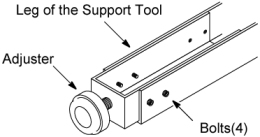
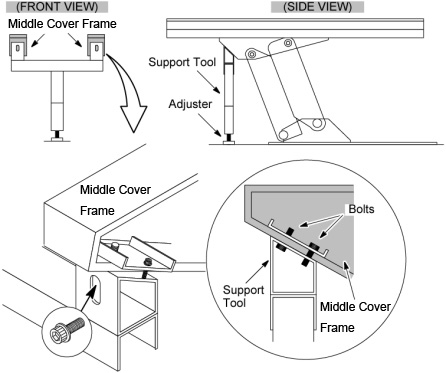
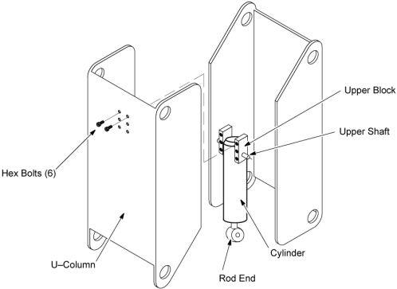
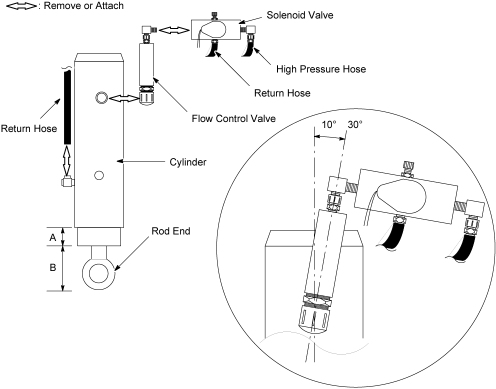
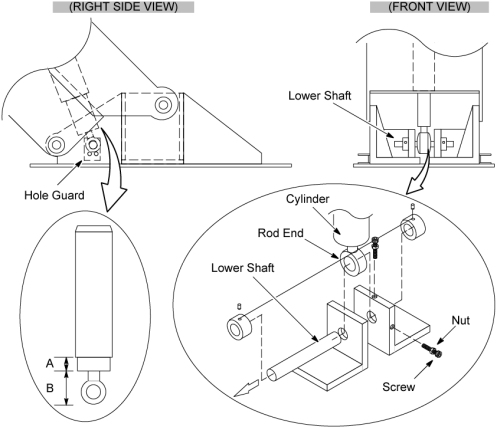
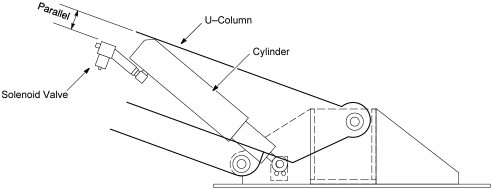

Operating Documentation
Direction 5181166-800, Rev# 7
BrightSpeed Select Service Methods Adv
Operating Documentation |
| Required Persons | Preliminary Reqs | Procedure | Finalization |
|---|---|---|---|
| 1 |
| Last Revised: | 16 March 2007 |
| Item | Qty | Effectivity | Part# | Manufacturer | |
|---|---|---|---|---|---|
| Support Tool | 1 | - | 2212864 | - | |
| Item | Qty | Effectivity | Part# | Manufacturer |
|---|---|---|---|---|
| Oil | 1 | - | Z9807QD | - |
| Sealing Tape | 1 | - | - | - |
| Tie-wrap | - | - | - | |
| Kim wipe | - | - | - |
| Item | Qty | Effectivity | Part# | Manufacturer | |
|---|---|---|---|---|---|
| Hydraulic Cylinder | 1 | - | 2243960 | - | |
| CRASH HAZARD! | |
| DO NOT REMOVE THE CYLINDER WITHOUT REMOVING THE UPPER STRUCTURAL SUPPORT, UPPER SUPPORT, AND U–COLUMN FIRST. | |
| Understand and follow the Safety Guidelines Manual. | |
Remove the following covers and component:
Top Covers (Left and Right side) (Refer to Table Covers Removal)
Middle Side Cover (Left and Right side) (Refer to Table Covers Removal)
Cradle (Refer to Cradle)
Rear Cover (Four(4) Screws)
Left and Right Rail Covers (Four(4)x2 Screws)
Cradle Tray (Six(6) Screws)
Bottom Covers (front and bottom) (Refer to Table Covers Removal)
Attach the support tool as follows:
| NOTE: | When using the support tool, the adjuster should be partially extended, about 5cm, before supporting the Table. |
Assemble the Table Support Tool.
Illustration 1: Leg of the Support Tool

Attach the support tool to the undersurface of the Table on the side farthest from the Gantry using the four bolts currently screwed into the bottom of the Middle Cover frame. Lower the Table onto the support.
Illustration 2: Table Support Tool

"Remove power from Table by turning off “120VAC”, “Axial Drive” and “HVDC” switches on the service switch panel."
Disengage the upper blocks from the U–column by unscrewing six support bolts.
Illustration 3: Cylinder Removal

Remove the oil return hose from the hydraulic cylinder.
Remove the solenoid valve from the cylinder.
Remove the flow control valve from the old cylinder, then attach to the new cylinder using sealing tape.
Verify that the flow control valve should be at an angle of approximately 10° ∼ 30°to the cylinder.
Attach the solenoid valve to the new cylinder.
Attache the return hose to the new cylinder.
Illustration 4: Valve Removal/Attachment

Remove the small metal hole guard from the inside of the lower right side support.
Remove the lower shaft and slide it out of the exposed side hole.
Remove the rod and the cylinder together.
Measure the distance “B” : between the rod end and the rod base of the old cylinder.
Adjust the new rod to the same distance, “B”, as the old rod.
Install the new rod and cylinder using the lower shaft. Tighten the lower shaft into place.
Return the hole guard to the side support and screw it into place.
Illustration 5: Metal Hole Guard and Lower Shaft

Verify that all piping and hosing is in the proper configuration and will not catch.
Add oil to the pump by referring to the following section:
Table 1: Referring Section
| Initial Table Height Prior to Replacement | Refer to ... |
| Maximum (fully extended) | TABLE PUMP MINOR LUBRICATION When oiling the pump, the initial amount of oil poured into the pump should be approximately 140 milliliters. |
| Less than Maximum | TABLE PUMP MAJOR LUBRICATION When oiling the pump, the initial amount of oil poured into the pump should be approximately 50 milliliters for every 10mm that the rod could not be extended (for every 10mm below the 255mm maximum rod extension “A” in the Illustration 4. |
Loosen the adjuster of the support tool and carefully remove the support tool from under the table.
Raise and lower the Table repeatedly and Check the following:
Visually check that the solenoid valve and U–Column surface is parallel.
Verify that the hosing does not catch or pull excessively.
Illustration 6: Solenoid Valve Configuration

Restore the Table to original configuration.
No finalization required.